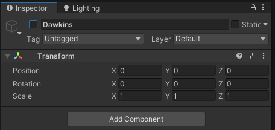
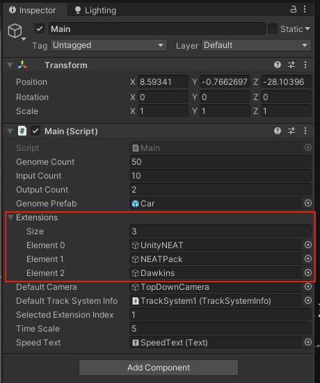
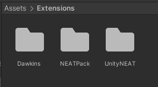
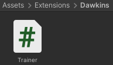
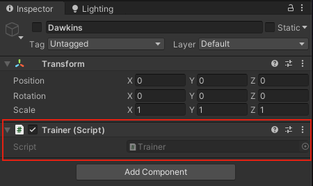

NeuroGen
NeuroGen is an open-source, extensible, and modular evolution simulator primarily built for self-driving cars. It's based on Unity and written with C#.
It supports persistent storage of genomes using database libraries like SQLite 3. The database layer is written in C/C++ as a library, which is imported into the Unity project as a native plugin.
Entire source code is hosted on GitHub in this repository.
Built-in Extensions:
Credits
- Momena Akhter Shukhi for the development.
Core
NeuroGen keeps all its common utilities in the Core module. The core is responsible for handling extensions, database integration, etc.
Here are the following core modules available as of now:
Database Module
The database module provides a friendly API for storing relational data related to extensions, especially models representing Artificial Neural Networks, such as genomes. It's a Native Unity plug-in primarily used by extensions of NeuroGen for saving/loading models.
The module's API is at a much higher level, abstractifying the database engine, SQLite 3. SQLite 3 is used as an embedded and relational database, chosen for its stable and lightweight nature.
Main Module
NeuroGen begins all its operations from one module, Main.
It abides by the Singleton Pattern, making it convenient to access its instance from any part of the simulator.
The Main module initiates the training of cars by activating the selected extension, with the selection set at compile time.
The module also handles loading native plugins of Unity, handling connections with native libraries such as SQLite 3.
Attributes
- Genome Count (quantity of cars)
- Input count (from the sensors of each car)
- Output count (for controlling each car)
- Genome Prefab (prefab representing a car)
- Extensions List
- Default Camera
- Default Track Information
- Selected Extension Index
Extensions
NeuroGen is designed to be modular and extensible, with convention over configuration.
Extensions are supposed to be embedded into the Unity project of NeuroGen and are typically written in C#.
Each extension is expected to host its own algorithm (not necessarily genetic/evolutionary algorithm) for training, testing, etc. However, they all share the same purpose - training cars to drive themselves through reinforcement learning.
Creating an Extension
Creating a NeuroGen extension is easy and straightforward. Let's assume that the extension we're creating is named Dawkins. Proceed by following the tasks below sequentially (each in their own heading).
Creating the Extension's Main GameObject
Your extension must have at least one GameObject that holds all the scripts required for initiating training - it's known as the extension's main GameObject. It must be deactivated by default and should only be activated by the core of NeuroGen, not by the extension itself.
Conventionally, the name of the extension's main GameObject is kept the same as the extension itself.
The main GameObject may look something like this:

Conventionally, the GameObject representing the extension is kept as the child of a GameObject named Extensions in the MainScene, like this:

Registering the Extension in the Core
NeuroGen initiates all its operations through the Main module. This module holds and activates the GameObject of the selected extension automatically. However, to let the Main module do so, you need to add the extension's GameObject to the list of extensions in the Main module. This way, the core of NeuroGen, which the Main module is part of, is aware of the extension's existence.
This is how the "Extensions" list of the Main module looks like after Dawkins is added:

Writing the Scripts
All the scripts associated with the extension conventionally reside in its own directory in the /Assets/Extensions directory, where the leading forward-slash indicates the root of NeuroGen's source directory.
This is how the /Assets/Extensions directory may look like after creating a directory for Dawkins:

It's recommended to wrap all the scripts of your extension in its own namespace. Whilst naming a namespace, make sure it has least possibility of any naming collision.
Since the extension's main GameObject is activated when the extension is selected to take control of the training, all the scripts that must run to initiate training should be attached to it as its components.
For Dawkins, let's create a script called Trainer and keep it inside the /Assets/Extensions/Dawkins directory:

This is how the contents of the script may look like:

Let's attach it to the extension's main GameObject so its Start method gets invoked whenever the extension is activated. This is where we can write code to begin the training:

Conclusion
Now we have the foundation of our extension, you can develop it to train cars, however you like, based on your algorithm.
NEATPack
NeatPack is an extension of NeuroGen based on the NEAT algorithm. It includes features such as:
- Training cars, based on neural networks, to drive, using the NEAT algorithm
- Rendering the topologies of neural networks on screen
Notes
- When a session starts:
- All the cars are instantiated by the
PopulationProxy.InstantiateAllGenomesmethod - Genome instances are created by the
Population.Populatemethod
- All the cars are instantiated by the
Genomeinstances are converted toPackedGenomeinstances for serialization/deserialization- Genomes are stored in the
PopulationCar.Evolvemethod
UnityNEAT
UnityNEAT is an extension of NeuroGen based on the NEAT algorithm. It includes features such as:
- Training cars, based on neural networks, to drive, using the NEAT algorithm